Project 2: Fun with Filters and Frequencies!
Overview
This project explores what we can do with 2D convolutions and the frequency content of images. In Part 1, I wrote convolution from scratch and used finite difference and derivative of Gaussian filters to detect edges. In Part 2, I used low-pass and high-pass filters to sharpen images, build hybrid images that change depending on viewing distance, and blend images together seamlessly using Gaussian and Laplacian stacks.
Part 1.1: Convolutions from Scratch
I first implemented convolution with four nested loops: two to slide over every output pixel and two to walk
over every entry of the kernel. Since convolution (unlike cross-correlation) flips the kernel, I index the kernel
backwards with kernel[HK - 1 - k, WK - 1 - l]. Zero padding of width p is added around
the image before convolving.
def conv_4loops(image, kernel, p = 0):
H, W = image.shape[:2]
HK, WK = kernel.shape[:2]
padded = np.zeros((H + 2*p, W + 2*p))
padded[p:p+H, p:p+W] = image
out_H = H+2*p-HK+1
out_W = W+2*p-WK+1
feature_map = np.zeros((out_H,out_W))
for i in range(out_H):
for j in range(out_W):
value = 0
for k in range(HK):
for l in range(WK):
value += kernel[HK - 1 - k, WK - 1 - l] * padded[i+k][j+l]
feature_map[i, j] = value
return feature_mapThe two-loop version replaces the inner two loops with a single vectorized multiply-and-sum between the flipped kernel and the image patch under it:
def conv_2loops(image, kernel, p = 0):
...
for i in range(out_H):
for j in range(out_W):
feature_map[i, j] = np.sum(kernel[::-1, ::-1] * padded[i:i+HK, j:j+WK])
return feature_mapRuntime
I timed all three implementations with a 9×9 box filter on a 252×189 downscaled version of my portrait (the four-loop version is far too slow to run on the full 4032×3024 image in a reasonable time).
| Implementation | Time |
|---|---|
| 4 loops | 0.5131 s |
| 2 loops | 0.0525 s |
scipy.signal.convolve2d | 0.0030 s |
Vectorizing the inner loops gives significant speedups, which is magnified in the scikit image processing library via it's C backend.
Boundary handling
The functions here use zero padding along the boundaries. This however, results in a border of darker pixels around the image.
Results on my portrait
I convolved a grayscale picture of myself with a 9×9 box filter and the finite difference operators
Dx = [1, 0, -1] and Dy = [1, 0, -1]T. The
derivative images are shown as absolute values, scaled so the 99.5th percentile maps to white.
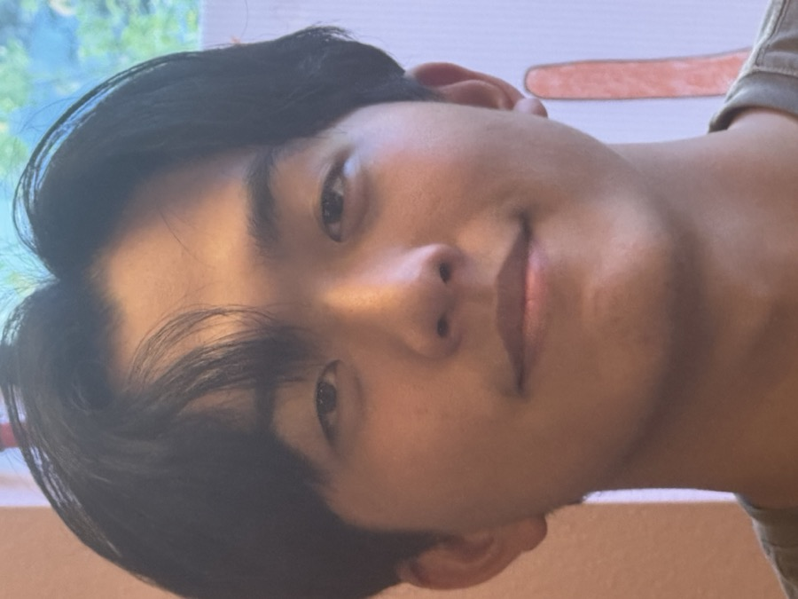
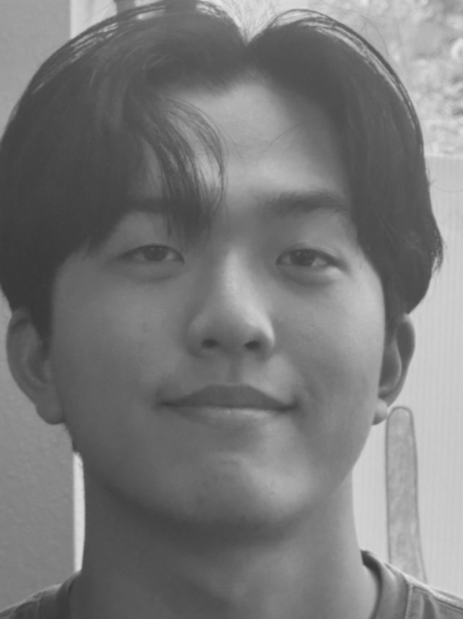
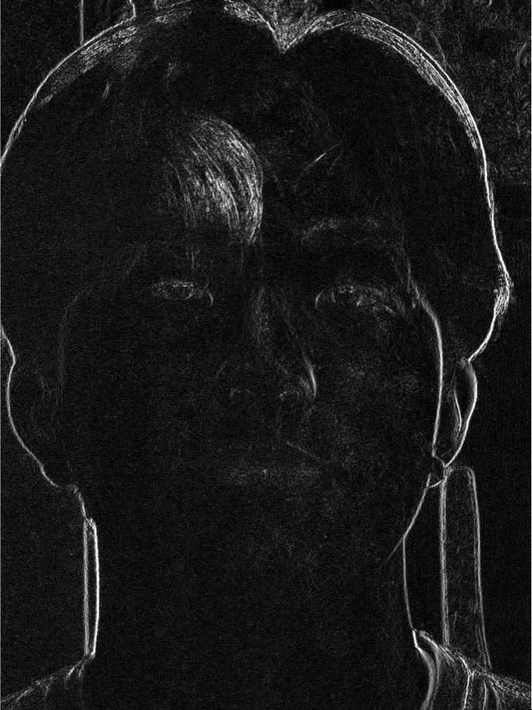
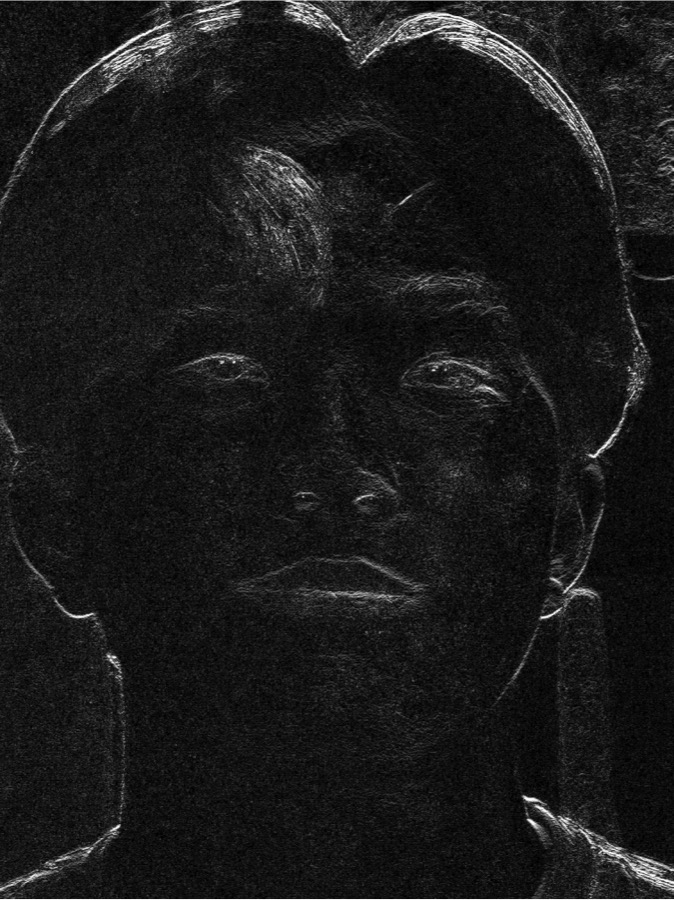
Dx responds to vertical edges like the sides of my face and hair, while Dy picks up horizontal edges like my eyebrows, eyes, and mouth.
Part 1.2: Finite Difference Operator
Convolving the cameraman image with Dx and Dy gives the partial
derivatives of the image in x and y. Combining them gives the gradient magnitude
sqrt((∂I/∂x)² + (∂I/∂y)²).
cameraman_dx = scipy.signal.convolve2d(cameraman, DX)
cameraman_dy = scipy.signal.convolve2d(cameraman, DY)
cam_dx_mag = np.abs(cameraman_dx)[:,1:-1] # crop 'full' output back to image size
cam_dy_mag = np.abs(cameraman_dy)[1:-1,:]
gradient_magnitude = np.sqrt(cam_dx_mag**2 + cam_dy_mag**2)
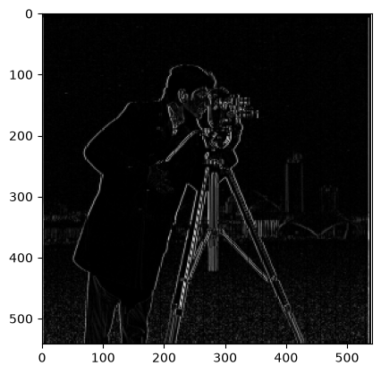
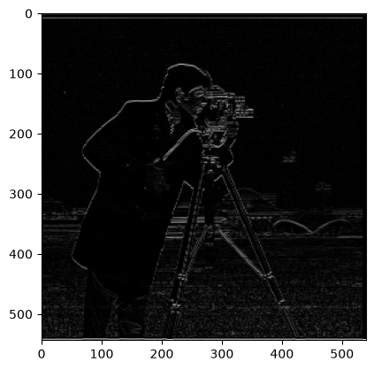
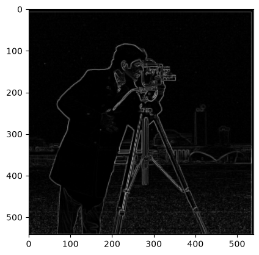
To turn the gradient magnitude into an edge image, I binarized it with a threshold of 50. Different thresholds had different tradeoffs: values below 35 produced noise edges with blades of grass being prominent while values above 50 missed many building edges.
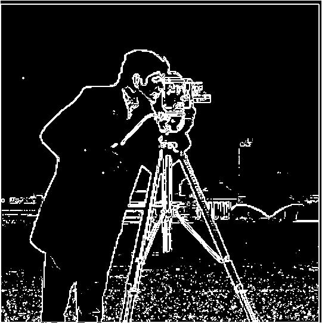
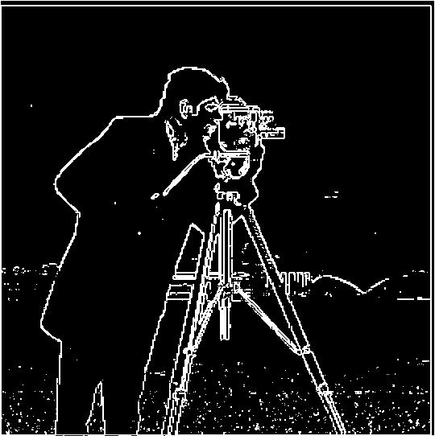
Part 1.3: Derivative of Gaussian (DoG) Filter
The finite difference results are noisy, so I first smoothed the cameraman with a 2D Gaussian, made by taking the
outer product of a 1D Gaussian from cv2.getGaussianKernel(9, 1) with itself, and then computed the
gradient magnitude of the blurred image exactly as in Part 1.2.
gauss_2d = np.matmul(cv2.getGaussianKernel(9,1), cv2.getGaussianKernel(9, 1).T)
blurred_cam = scipy.signal.convolve2d(cameraman, gauss_2d)
blur_dx_mag = np.abs(scipy.signal.convolve2d(blurred_cam, DX))[:,1:-1]
blur_dy_mag = np.abs(scipy.signal.convolve2d(blurred_cam, DY))[1:-1,:]
blurred_grad_mag = np.sqrt(blur_dx_mag**2 + blur_dy_mag**2)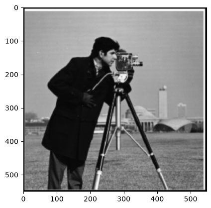
Comparison with the finite difference gradient

What differences do you see? Blurring first successfully removed the noisy edges coming from
the grass, while preserving the important edges of the cameraman and the camera. The Gaussian removes the
high-frequency texture before the derivative can amplify it, so the speckles that filled the bottom of the
finite difference result are almost completely gone. This also let me lower the threshold from 50 to 40
without picking up noise. The edges are thicker and smoother, and lines like the tripod legs and the
cameraman's outline are continuous instead of broken. The tradeoff is that some fine detail, like the faint
buildings in the background, fades away. The white frame around the border comes from the zero padding in
convolve2d, which creates an artificial edge where the image meets the black padding.
Single convolution with DoG filters
Since convolution is associative, (I * G) * Dx = I * (G * Dx). So instead of
blurring and then differentiating, I can build the derivative of Gaussian filters once and convolve the
original image with them in a single step:
DoG_x = scipy.signal.convolve2d(gauss_2d, DX)
DoG_y = scipy.signal.convolve2d(gauss_2d, DY)
DoG_cam_x_1step = np.abs(scipy.signal.convolve2d(cameraman, DoG_x))[:,1:-1]
DoG_cam_y_1step = np.abs(scipy.signal.convolve2d(cameraman, DoG_y))[1:-1,:]
DoG_cam_mag_1step = np.sqrt(DoG_cam_x_1step**2 + DoG_cam_y_1step**2)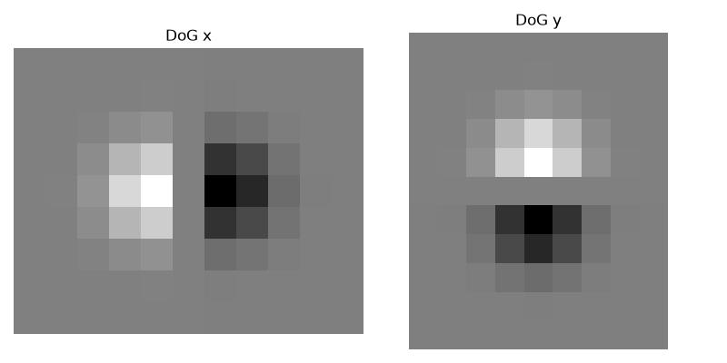
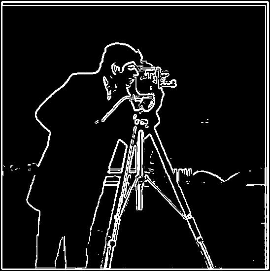
With the same threshold, the two edge images are identical. Comparing the gradient magnitudes directly,
the largest difference between blurred_grad_mag and DoG_cam_mag_1step is about
2×10−13, which is just floating point error. This verifies that blurring then taking
derivatives gives the same result as convolving once with the DoG filters.
np.abs(blurred_grad_mag - DoG_cam_mag_1step).max() # 2.13e-13Part 2.1: Image "Sharpening"
A Gaussian blur is a low-pass filter, so subtracting the blurred image from the original leaves only the high
frequencies. Adding those high frequencies back (scaled by some amount α) makes the image look sharper:
sharp = f + α(f − f * g). Rearranging, this becomes a single convolution with the
unsharp mask filter (1 + α)e − αg, where e is the
unit impulse.
sharpen_gauss = np.matmul(cv2.getGaussianKernel(13, 2), cv2.getGaussianKernel(13, 2).T)
def unsharp_kernel(alpha):
kernel = np.zeros((13, 13))
kernel[6, 6] = 1 + alpha
kernel -= alpha * sharpen_gauss
return kernel
def convolve_rgb(image, kernel):
return np.dstack([
scipy.signal.convolve2d(image[:, :, ch], kernel, mode='same', boundary='symm')
for ch in range(3)
])
sharp = np.clip(convolve_rgb(image, unsharp_kernel(2)), 0, 1)I convolve each color channel separately with boundary='symm' so that the edges of the image don't
darken from zero padding, and clip the result back to [0, 1].
Taj Mahal
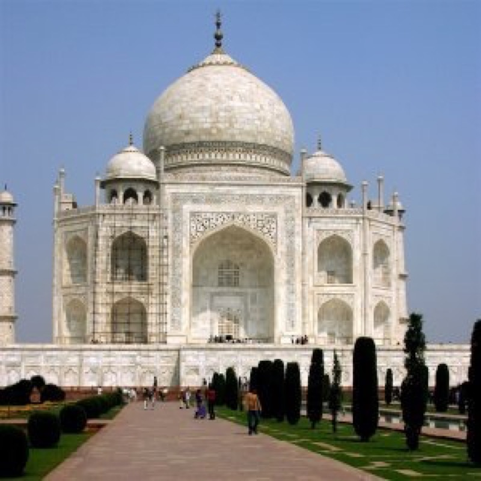
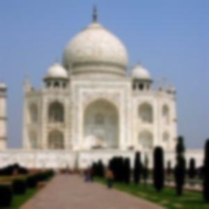
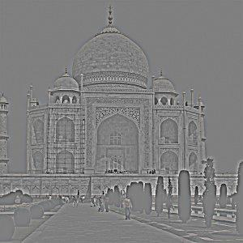

Varying the sharpening amount


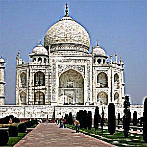
Small values of α make the details on the dome and arches slightly crisper. As α grows, edges get more contrast, but by α = 5 the image is oversharpened: bright halos appear around the building, the sky becomes grainy, and JPEG artifacts get amplified along with the real detail. α = 2 was a good middle ground, so I used it for the rest of my examples.
More examples
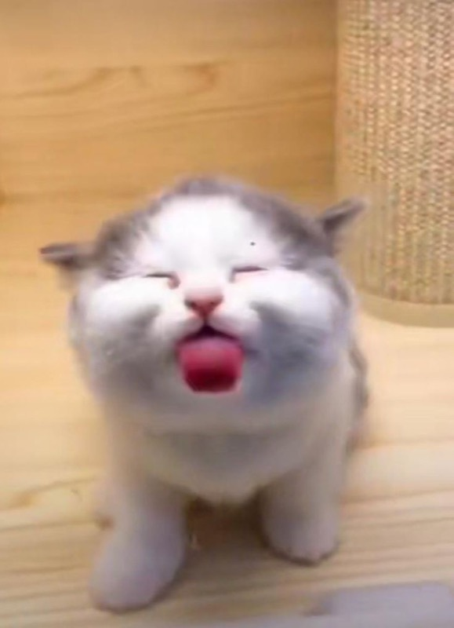
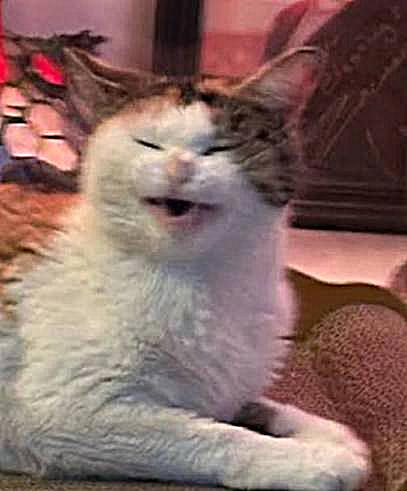
Sharpening helps most on images that are only slightly soft, like the cats' fur and whiskers. It can't recover detail that was never captured, though: the babycat photo is still pretty blurry.
Blur, then resharpen
To test how much sharpening can actually recover, I blurred a sharp photo of myself with the same Gaussian and then sharpened the blurry version with α = 2.
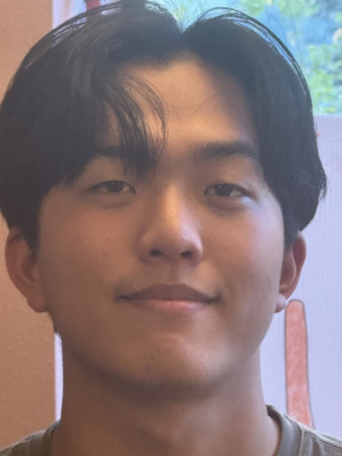
The resharpened image looks much crisper than the blurred one, and strong edges like my hairline, eyes, and the outline of my face come back. However, it doesn't match the original. The finest details, like individual strands of hair and skin texture, were removed by the blur, so there is nothing left to amplify. Instead, the edges that remain are exaggerated, which gives the image a slightly artificial look. Sharpening only boosts the high frequencies still in the image; it can't restore frequencies that were filtered out.
Part 2.2: Hybrid Images
A hybrid image combines the low frequencies of one image with the high frequencies of another. Up close, the
high frequencies dominate, but from far away only the low frequencies are visible. After aligning the two
images on two points I click in each, I low-pass the first image with a Gaussian of standard deviation
sigma1, high-pass the second by subtracting its own Gaussian blur (sigma2), and add
them together.
def hybrid_image(im1, im2, sigma1, sigma2):
low_freq = sk.filters.gaussian(im1, sigma=sigma1, channel_axis=-1)
low_freq_im2 = sk.filters.gaussian(im2, sigma=sigma2, channel_axis=-1)
high_freq = im2 - low_freq_im2
return low_freq + high_freqTeemo + Rat
For my favorite result, Teemo is the low-frequency image (σ1 = 6) and a rat is the high-frequency image (σ2 = 5).
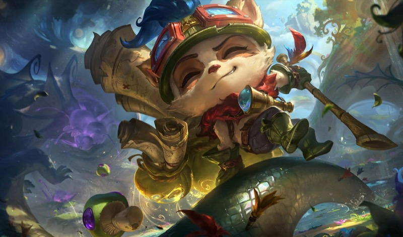
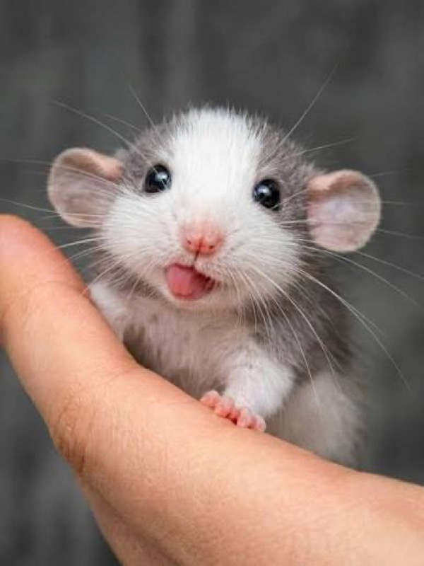
I aligned the two images by clicking two corresponding points in each. The alignment rotates and scales the rat to match Teemo, which leaves black padding in the corners.
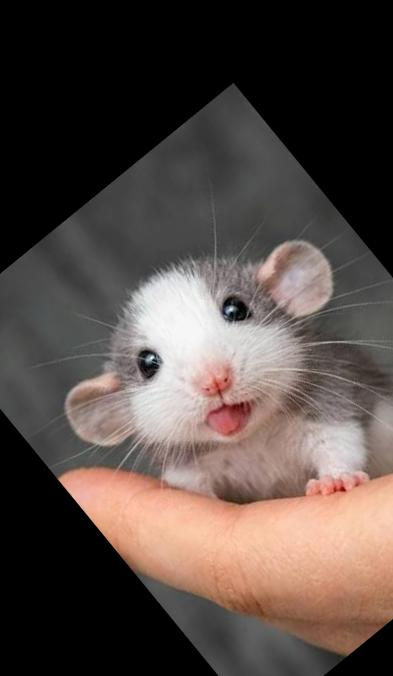
Below are the log magnitude Fourier transforms at each step. The low-pass filter keeps only the center of Teemo's spectrum, while the high-pass filter suppresses the center of the rat's spectrum and leaves the outer region. The hybrid's spectrum contains both.
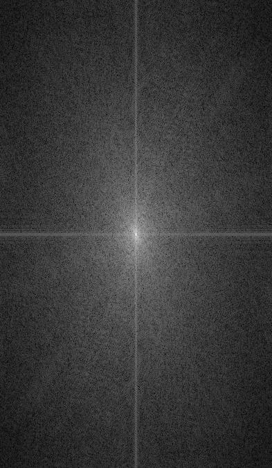
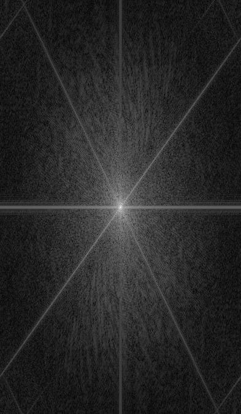
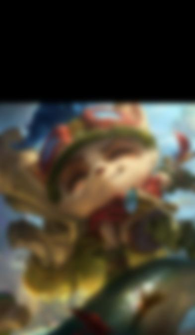
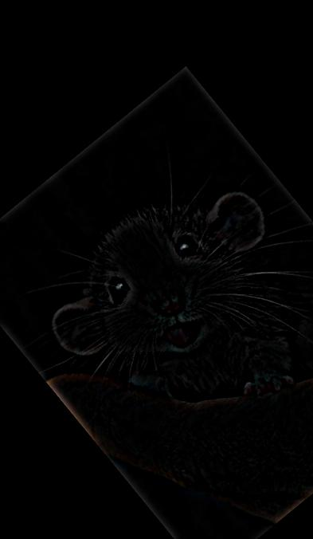
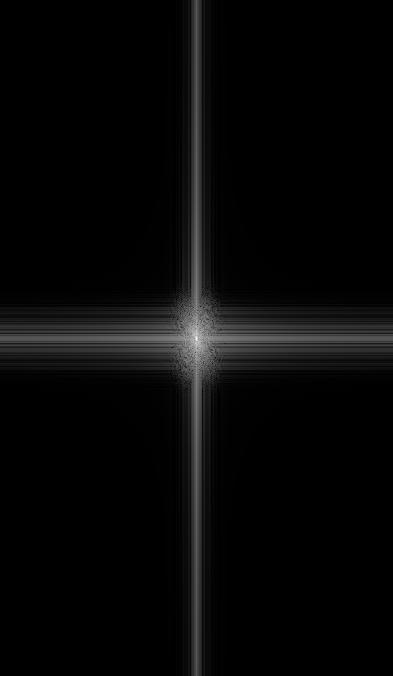
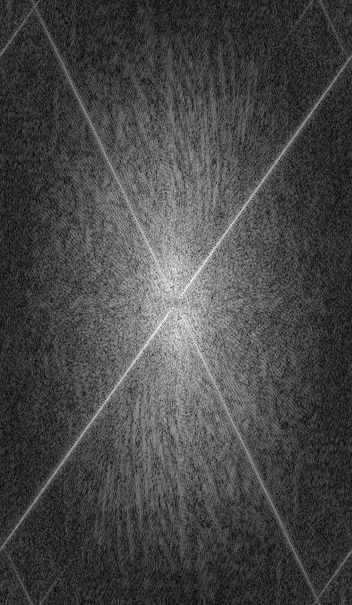
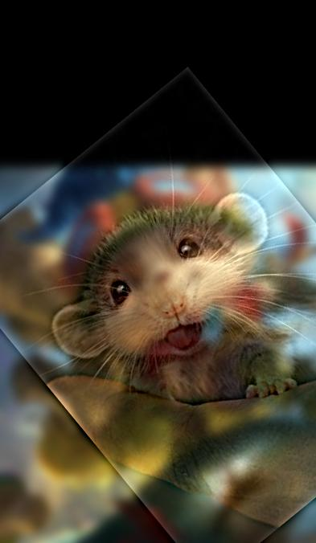
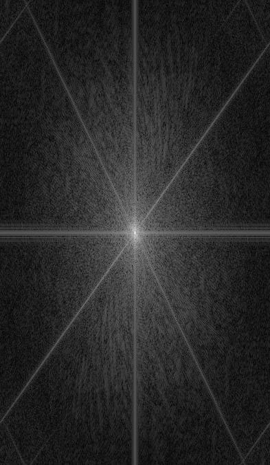
Choosing the cutoffs. Cutoffs were chosen using trial and error to achieve the desired visual effect.
Derek + Nutmeg
Derek is low-passed with σ1 = 13 and Nutmeg is high-passed with σ2 = 12.
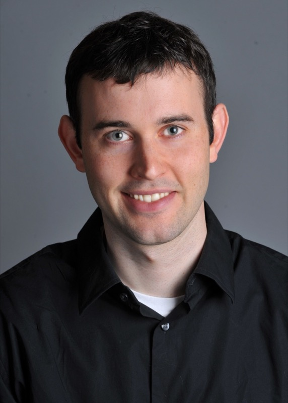
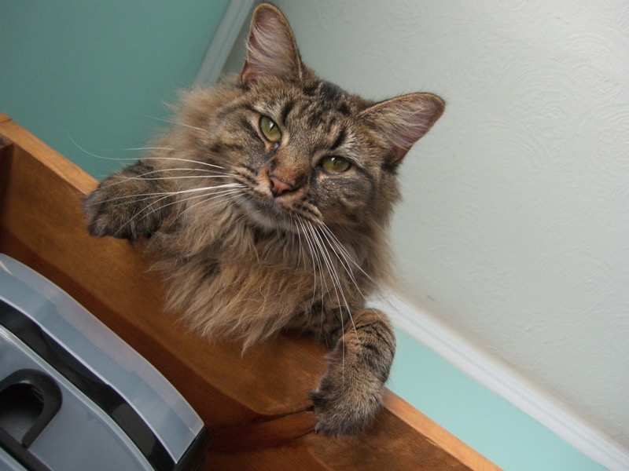
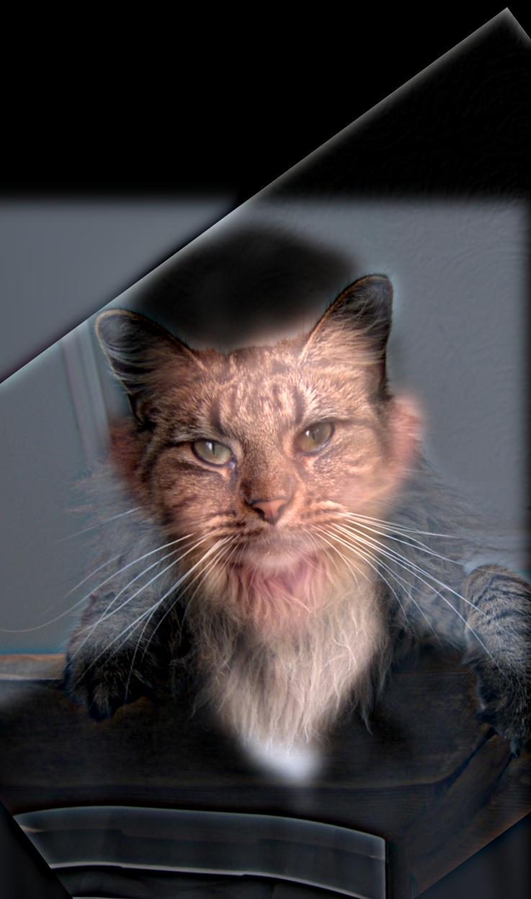
Gator + Cat
The gator is low-passed with σ1 = 6 and the cat is high-passed with σ2 = 3.
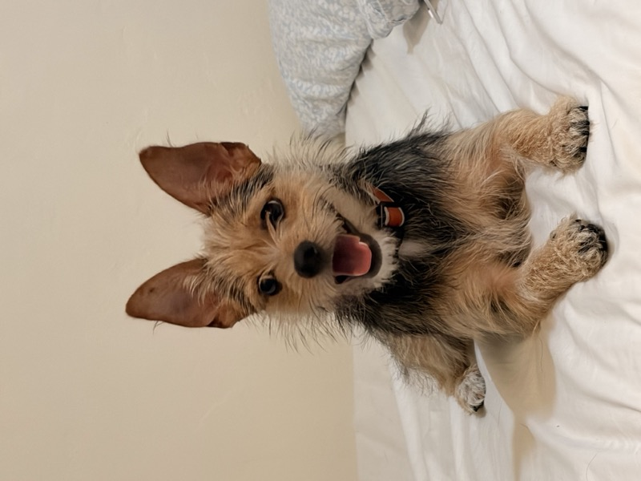
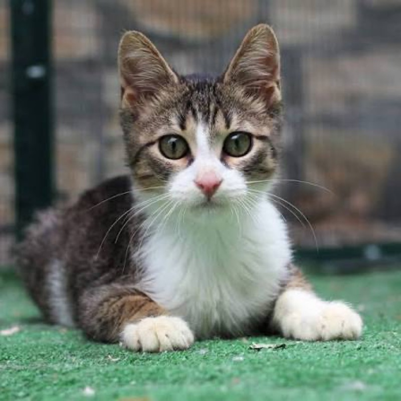
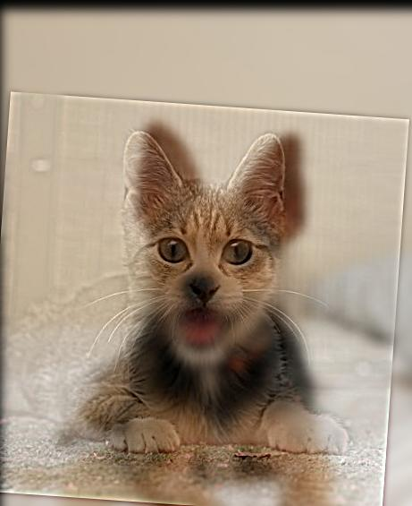
Part 2.3: Gaussian and Laplacian Stacks
Each level of the Gaussian stack here blurs the original with a Gaussian whose σ doubles every level (2, 4, 8, 16). Each level of the Laplacian stack is the difference between consecutive Gaussian levels, and the final level is the last Gaussian level itself, so summing the whole Laplacian stack gives back the original image.
def gaussian_stack(image, num_levels=5, sigma=2):
stack = [image]
for i in range(1, num_levels):
blurred = sk.filters.gaussian(image, sigma=sigma * (2 ** (i - 1)), channel_axis=-1)
stack.append(blurred)
return stack
def laplacian_stack(image, num_levels=5, sigma=2):
gaussian = gaussian_stack(image, num_levels, sigma)
laplacian = []
for i in range(num_levels - 1):
laplacian.append(gaussian[i] - gaussian[i + 1])
laplacian.append(gaussian[-1]) # final low-frequency residual
return laplacianFor display, the Laplacian levels are normalized to [0, 1] since they contain negative values.
Apple
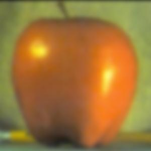
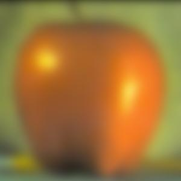
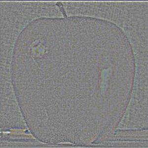
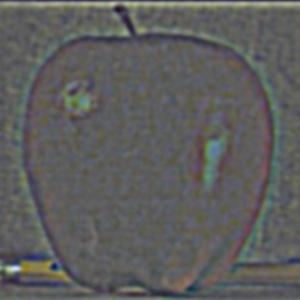
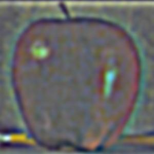
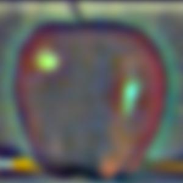
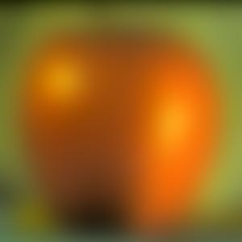
Orange
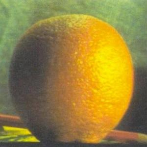
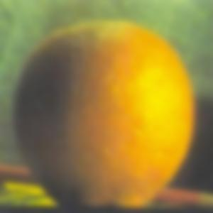
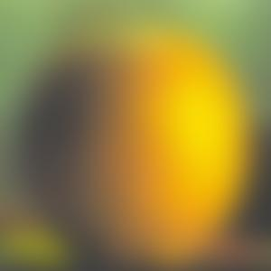
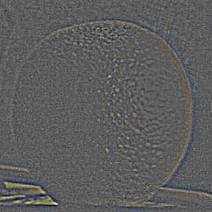
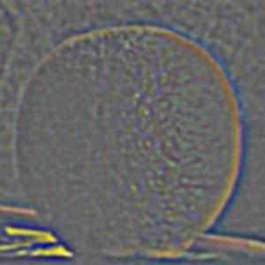
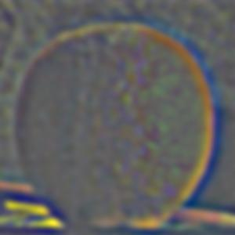
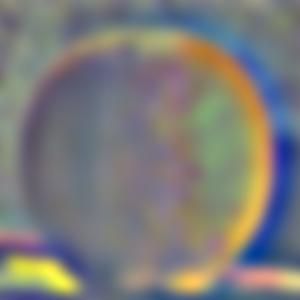
Part 2.4: Multiresolution Blending
To blend two images, I build a Laplacian stack for each and a Gaussian stack for the mask. At each level, the blurred mask weights the first image's Laplacian and one minus the mask weights the second's. Summing the combined levels gives the final blend. Because the mask gets blurrier at lower frequencies, coarse features are blended over a wide seam while fine details are blended over a narrow one, which hides the seam.
gauss_mask = gaussian_stack(mask)
combined = []
for i in range(5):
combined.append(gauss_mask[i] * laplacian_apple[i]
+ (1 - gauss_mask[i]) * laplacian_orange[i])
blended = np.clip(np.sum(combined, axis=0), 0, 1)The Oraple
Using a vertical step mask (left half = 1), the apple and orange blend into the classic oraple.


The figure below recreates Figure 3.42 from Szeliski: each row is a level of the stack, with the masked apple on the left, the masked orange in the middle, and their sum on the right. The last row sums every level.
Jersey Swap: LeBron in a Spurs Jersey
For an irregular mask, I put De'Aaron Fox's Spurs jersey on LeBron. I aligned the two photos with the same two-point alignment from the hybrid images, then built the jersey mask automatically in HSV space: pixels with a blue hue and enough saturation are kept, small holes are filled with morphological closing, and only the largest connected region is kept. I click once on LeBron's waist to cut the mask off below the jersey, then dilate it slightly so the blend covers the whole jersey.
hsv = sk.color.rgb2hsv(image)
h, s, v = hsv[..., 0], hsv[..., 1], hsv[..., 2]
mask = (h > 0.55) & (h < 0.72) & (s > 0.35) & (v > 0.15)
mask = ndi.binary_closing(mask, iterations=4)
mask = ndi.binary_fill_holes(mask)
labels, n = ndi.label(mask)
sizes = ndi.sum(mask, labels, range(1, n + 1))
mask = labels == (np.argmax(sizes) + 1)The Laplacian stacks of the masked inputs for this blend:
Ball Swap: A Soccer Ball Through the Hoop
For my second custom blend, I replaced the basketball going through a hoop with a soccer ball. I utilized the starter code's align method to warp the soccer ball into the basketball's position. The mask was created afterwards by clicking on the left and right edges of the basketball.
The same two clicks on the basketball also define the mask: their midpoint is the center of a circle, and half the distance between them is its radius.
The blurred mask at the coarse levels softens the transition so the ball's edge picks up some of the background's lighting. One limitation is that in the original photo, some of the net's strings pass in front of the basketball. Since the mask is a solid circle, the soccer ball covers those strings, so the ball looks like it sits slightly in front of the net instead of inside it.
Takeaways
One of the key things that I learned from this project was the importance of image processing via code before trying to create composite images or make some form of analysis. A lot of time was spent tweaking different normalization methods, threshold, and filters to get the expected results. Additionally, I learned a ton about the impact of gaussian blurring and how it can be used in practice.